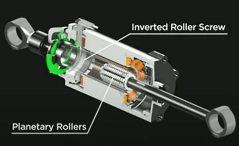

Chinas Frameless-Drehmomentmotor-Zulieferer
Die rotierende Muskulatur jedes Humanoid-Gelenks — gleiche Lieferkette, gleiche Geschichte.
Ein Humanoid geht auf linearen Gelenken, und jedes lineare Gelenk läuft über eine Planetenrollenmutter. Der Westen hält noch ~80 % des Premium-Marktes — Nanjing Gongyi, Wuzhou Xinchun und Hengli Holen schnell auf.

Ein humanoider Roboter dreht nicht nur — er drückt. Jede Kniebeuge, jeder Schritt, jedes Fingergreifen kommt von Linearbewegung. In den heutigen Flaggschiff-Humanoiden wird diese Bewegung von einer Planetenrollenmutter erzeugt: einer Spindel, bei der Gewinderollen die Last verteilen und die Drehung des Motors in tausende Newton Linearkraft umwandeln. Tesla Optimus verbaut 14 davon in Armen und Beinen; Analysten schätzen, dass Planetenrollenmuttern das teuerste einzelne mechanische Bauteil eines Humanoiden sind — rund 19 % der mechanischen Kosten pro Einheit.
Eine Planetenrollenmutter ist das stärkere Geschwisterteil der Kugelumlaufspindel. Wo diese die Last über Punktkontakt weniger Kugeln überträgt, verteilt eine Rollenmutter sie über Linienkontakt mehrerer gelagerter Rollen — das gibt rund die 3- bis 10-fache Traglast bei besserer Steifigkeit, längerer Lebensdauer und höherer Stoßunempfindlichkeit. Eine Standard-Rollenmutter mit 20 mm Durchmesser hält etwa 50.000 N Axiallast aus, eine gleich große Kugelumlaufspindel nur rund 5.000 N. Genau das brauchen Hüfte, Knie und Schulter eines Humanoiden: hohe Kraft, hohe Zyklenzahl und die Fähigkeit, eine Pose bei abgeschaltetem Motor zu halten — was Akkustrom spart, während der Roboter steht.
Hochwertige Planetenrollenmuttern bleiben ein westliches Oligopol. Europäische Namen wie SKF, Rollvis und GSA (dazu Ewellix und Tolomatic bei Aktuatoren) halten rund 80 % des Welt-Premiummarktes, chinesische Hersteller gemeinsam unter 20 %. Die Hürde ist die Fertigung, nicht das Design: Planetenrollenmuttern brauchen ultrapräzises Gewindeschleifen, Spezialmaschinen und jahrelanges Prozess-Know-how. Chinesische Lieferanten sind erst 2024–2025 in die Massenfertigung eingestiegen — und skalierten seitdem massiv mit dem Humanoid-Boom.
| Unternehmen | Nanjing Gongyi (南京工艺) | Wuzhou Xinchun (五洲新春) | Hengli (恒立液压) | Tuopu (拓普集团) |
|---|---|---|---|---|
| Rolle | Chinas Nr. 1, ~8–14 % Inlandsanteil | Marktführer umgekehrte Rollenmuttern, ~10 % Anteil | Hydraulik-Riese im Einstieg | Integrierter Aktor-Zulieferer |
| Signal 2026 | Gesamte Baureihe Φ16–32 mm; 14,2 Tage Lieferzeit | 87.000 Einheiten 2025; Ø-Preis −39 % | Rollenmuttern in Erprobung; Tesla-Muster | Optimus-Tier-1, 300.000 Einh./Jahr |
| Stärke | Erste dedizierte Rollenmutter-Schleiflinie Chinas | Lager-Erbe + Kostenmaschine | Präzisionsfertigung im Hydraulikmaßstab | Motor + Getriebe + Mutter in einem Modul |
Das staatlich getragene Nanjing Gongyi Equipment Manufacturing (南京工艺装备制造) ist Chinas größter Hersteller von Wälzfunktionsbauteilen und die unangefochtene Nr. 1 bei heimischen Planetenrollenmuttern, mit je nach Bericht rund 8–14 % Marktanteil in China. Es fertigt heute die gesamte Baureihe Φ16–32 mm in Serie und hat die erste dedizierte Schleiflinie des Landes aufgebaut, was die Lieferzeit auf rund 14,2 Tage drückt (Branchendurchschnitt ~28,6 Tage). Diese Kombination aus Präzision, Breite und Geschwindigkeit macht es heute zum Standardlieferanten chinesischer Humanoid-OEMs.
Der Lagerspezialist Wuzhou Xinchun (五洲新春, 603667) hält rund 10 % des chinesischen Marktes für Planetenrollenmuttern und ist zum Benchmark für Kostenreduktion geworden. 2025 lieferte es etwa 87.000 umgekehrte Planetenrollenmuttern zu einem Durchschnittspreis von rund 1.360 Yuan, 39 % weniger als im Vorjahr — das deutlichste Zeichen, dass Planetenrollenmuttern dieselbe Kostenkurve gehen wie vorher Harmonic-Getriebe und Frameless-Motoren in China. Die Kooperation mit Xinjian Transmission (新剑传动) öffnet die Tür zur globalen Humanoid-Lieferkette.
Hengli Hydraulik (恒立液压, 601100) ist der am meisten beobachtete Quereinstieg: Der Hydraulik- und Präzisionsfertigungs-Champion trägt jahrzehntelange Erfahrung in der Hochpräzisionsfertigung auf Spindeln über, Kugelumlaufspindeln werden schon in Kleinserie geliefert, Planetenrollenmuttern sind in der Erprobung — und Muster wurden an Tesla und andere geschickt. Tuopu (拓普集团) geht den Integrationsweg als exklusiver Tier-1 für Linear-/Dreh-Aktor-Module bei Tesla Optimus, mit 300.000 Einheiten Jahreskapazität in Ningbo und einem Werk in Mexiko. Beste (贝斯特) hat über seine Tochter Yuhua plus die deutsche KISSLING C0-Kugelumlaufspindeln erreicht, und Bote Precision (博特精工) hält ~8 % Marktanteil. Autozulieferer wie Bete Technology (北特科技) runden die breite Aufstellung ab.
Über die vier Namen oben hinaus ist das Feld 2025–2026 schnell breiter geworden. Hier die vollständige Liste der Hersteller mit kommerziellen oder Pilotprogrammen, gruppiert nach Hintergrund:
| Unternehmen | Hintergrund | Stand 2026 |
|---|---|---|
| Nanjing Gongyi (南京工艺) | Staatlicher Wälzkomponenten-Hersteller | Inlands-Nr. 1; Serienfertigung Φ16–32 mm; erste dedizierte Schleiflinie Chinas |
| Wuzhou Xinchun (五洲新春, 603667) | Lagerhersteller | 87.000 umgekehrte Rollenmuttern 2025 ausgeliefert; Ø-Preis −39 % YoY; ~10 % Anteil |
| Hengli Hydraulik (恒立液压, 601100) | Hydraulik & Präzisionsfertigung | Rollenmuttern in Erprobung; Tesla-Muster verschickt |
| Tuopu Group (拓普集团, 601689) | Autoteile → Aktor-Module | Optimus Tier-1; 300.000 Einh./Jahr Aktor-Kapazität, Ningbo + Mexiko |
| Beste Precision (贝斯特, 300580) | Auto-Präzisionsteile | C0-Kugelumlaufspindeln via Yuhua + KISSLING (D); Rollenmuttern in Entwicklung |
| Bote Precision (博特精工) | Werkzeugmaschinen-Kugelumlaufspindeln | ~8 % Inlandsanteil; lange Geschichte in Präzisions-Lineartechnik |
| Bete Technology (北特科技, 603009) | Auto-Lenkung & Wellen | Rollenmutter-Programm für Humanoid-Aktoren 2025 angekündigt |
| Shuanglin Holdings (双林股份, 300100) | Autoteile | Mini-Rollenmuttern <8 mm für Fingergelenke flinker Hände |
| Qinchuan Machine Tool (秦川机床, 000837) | Werkzeugmaschinenbauer | Baut die eigenen Gewindeschleifmaschinen — vertikale Integration senkt die Hürde |
| Xinjian Transmission (新剑传动) | Präzisionsgetriebe | Zusammenarbeit mit Wuzhou Xinchun, Ziel globale Humanoid-Lieferkette |
| Sanhua Intelligent (三花智控, 002050) | Thermik → Aktor-Module | Integrierte Linear-/Dreh-Aktor-Module für Humanoide; Tesla-Beziehung |
| Leisai Intelligence (雷赛智能, 002979) | Steuerungshersteller | Rollenmutter + Motor integrierte Linear-Module für Humanoid-Gelenke |
Humanoid-Gelenke lassen sich bestimmten Spindeldurchmessern zuordnen. Wenn Sie spezifizieren oder einkaufen: die heutigen Serienbereiche (Typwerte; einzelne Hersteller veröffentlichen genaue Kurven):
| Spindel-Ø | Typische Axiallast | Einsatz im Humanoiden | Chinesische Hersteller |
|---|---|---|---|
| Φ8–12 mm (Miniatur) | 1.000–3.000 N | Fingergelenke flinker Hände, feine Handgelenkbewegung | Shuanglin, Bote Precision |
| Φ16–20 mm | 8.000–15.000 N | Schulter, Ellenbogen, Handgelenk | Nanjing Gongyi, Wuzhou Xinchun, Bete |
| Φ25–32 mm | 20.000–50.000 N | Hüfte, Knie, Knöchel — die tragenden Beugelenke | Nanjing Gongyi, Hengli, Tuopu |
| Φ40 mm+ (groß) | 60.000 N+ | Industriepresse, Luftfahrt, schwere Humanoid-Prototypen | Meist Westen (SKF, Rollvis); chinesische Hersteller in der Qualifikation |
Die Kostenstaffel läuft mit Durchmesser und Präzisionsklasse: eine Φ20-C3-Umkehr-Rollenmutter aus chinesischer Produktion kostet in Serie grob 800–1.500 Yuan, ein Φ25-C0-Pendant von einem europäischen Lieferanten 8.000–15.000 Yuan — genau diese Preislücke treibt jeden Humanoid-OEM dazu, eine chinesische Second Source zu qualifizieren.
Drei strukturelle Vorteile erklären den Sprung. Erstens Werkzeugmaschinen-Eigenversorgung: China baut seine eigenen Gewindeschleifmaschinen (Qinchuan Machine Tool fertigt sie im Haus) und löst damit die alte Abhängigkeit von importierten Präzisionsschleifern. Zweitens die Ökonomie umgekehrter Rollenmuttern: das invertierte Design vereinfacht die Fertigung und senkt die Kosten drastisch — der Preisrückgang von Wuzhou Xinchun um 39 % in einem Jahr zeigt, wie schnell diese Kurve läuft. Drittens die integrierten Aktor-Module: Tuopu und Sanhua verkaufen Motor + Getriebe + Mutter als abgestimmte Einheit — genau das, was Humanoid-OEMs wollen, um nicht fünf Lieferanten zusammenstecken zu müssen.
Nanjing Gongyi (南京工艺) ist Chinas Nr. 1, mit rund 8–14 % Inlandsanteil, Massenfertigung der gesamten Baureihe Φ16–32 mm und der ersten dedizierten Rollenmutter-Schleiflinie des Landes.
Linienkontakt verteilt die Last auf mehrere Rollen, was Planetenrollenmuttern etwa die 3- bis 10-fache Traglast von Kugelumlaufspindeln gibt — ideal für die hochkraftbeaufschlagten linearen Gelenke in Beinen und Armen eines Humanoiden.
Tesla Optimus verbaut 14 umgekehrte Planetenrollenmuttern in Armen und Beinen. Planetenrollenmuttern sind typischerweise das teuerste mechanische Bauteil — rund 19 % der mechanischen Kosten pro Einheit.
Westliche Hersteller wie SKF, Rollvis und GSA halten noch rund 80 % des Weltpremiummarktes, aber Nanjing Gongyi, Wuzhou Xinchun, Hengli Hydraulik und Tuopu sind inzwischen in Massenproduktion oder bei Tesla in der Validierung.
In Serie kostet eine Φ20-C3-Umkehr-Rollenmutter aus chinesischer Produktion etwa 800–1.500 Yuan (ca. 110–210 $). Wuzhou Xinchun lieferte 2025 87.000 Einheiten zu rund 1.360 Yuan Durchschnitt, 39 % weniger YoY. Ein vergleichbares europäisches C0-Teil kostet meist 8.000–15.000 Yuan — die Lücke, die jeden Humanoid-OEM zu einer chinesischen Second Source treibt.
Der Großteil der chinesischen Produktion liegt heute in C3–C5 und deckt damit die allermeisten Bein-, Arm- und Schultergelenke ab. Beste (über KISSLING) und Nanjing Gongyi stoßen gerade in C0–C1 vor — das bisher exklusive Reservat von SKF, Rollvis und GSA. C0/C1 ist die letzte Grenze und der Haupt-Qualifikationsengpass für 2026–2027.
Nanjing Gongyi nennt für seine dedizierte Schleiflinie etwa 14,2 Tage, im Branchendurchschnitt rund 28,6 Tage. Sonderanfertigungen oder C0-Teile laufen weiter 6–12 Wochen, vergleichbar mit Europa. Die kürzere Lieferzeit ist selbst ein Wettbewerbsvorteil: Humanoid-OEMs iterieren Prototypen und sehen eine Designänderung in zwei Wochen statt zwei Monaten.
Die rotierende Muskulatur jedes Humanoid-Gelenks — gleiche Lieferkette, gleiche Geschichte.
Der gesamte Gelenk-Verbund — Motoren, Getriebe, Spindeln und die Unternehmen, die sie zusammenbauen.
Der Lager-Champion, zum Preisbrecher für Planetenrollenmuttern geworden.
Der Hydraulik-Champion im Einstieg in die linearen Antriebe der Humanoiden.
Unternehmensprofile, Produktseiten und Zulieferer-Analysen für Chinas Robotik-Ökosystem.